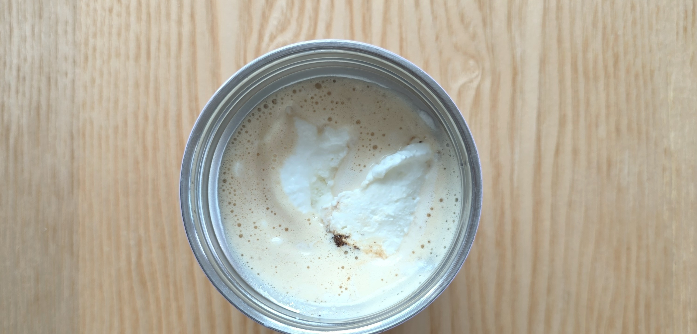

☕ 커피 원두 더클린커피 콜롬비아 스페셜티
다영's Pick : 일반 원두엔 곰팡이 독소(마이코톡신)가 검출되는 경우가 많아요. 더클린커피로 바꾸고 나서 두통 없이, 커피 마신 후 오히려 머리가 맑아졌어요.
☕ 커피 원두 유기농 디카페인
다영's Pick : 스위스워터 공법으로 카페인만 제거해 원두 본연의 향은 그대로예요. 카페인 없이 방탄커피 루틴을 이어가고 싶은 분들께 추천해요.
🧈 무염 목초버터
다영's Pick : 프레지덩트 · 이즈니
🫙 기버터 (Ghee)
다영's Pick : 기이지 기버터 — 유당 제거, 유당불내증 걱정 없이
💧 MCT 오일
다영's Pick : 마이노멀 MCT 오일 · 포켓용 오일 스틱
🍬 알룰로스
다영's Pick : 마이노멀 알룰로스 액체 · 분말 — 혈당 스파이크 없는 감미료
🧂 히말라야 소금
다영's Pick : 산체스 핑크소금 그라인더 — 풍미를 깊게 해주는 한 꼬집
🥛 콜라겐 파우더 (Bulletproof)
다영's Pick : 콜라겐 펩타이드는 관절·피부·뼈를 지탱하는 아미노산이에요. 갱년기 이후 골밀도 유지에도 효과적이라는 연구 결과가 있어요. 열에 강해 뜨거운 방탄커피에 타도 성분 파괴 없이 꾸준히 먹기 편해요.
쿠팡 바로가기 →🥛 동원 덴마크 생크림
다영's Pick : 진하고 고소한 생크림이에요. 방탄커피에 조금 넣으면 라떼 느낌이 확 살아나요. 성분이 생크림 하나라 첨가물 없이 방탄커피 원칙에 딱 맞아요.
마켓컬리 바로가기 →🥛 파스퇴르 생크림
다영's Pick : 저온 살균(HTST) 방식의 깔끔한 생크림이에요. 동원보다 담백한 라떼 느낌을 원할 때 선택해요. 신선한 풍미가 있어요.
마켓컬리 바로가기 →🎁 완제품 방탄커피 : 마이노멀 시그니처
다영's Pick : 더 진하고 풍부한 맛을 원할 때 딱이에요. 기버터가 들어있어 유당불내증 있는 분도 부담 없이 마실 수 있고, 고소하고 묵직한 포만감이 오래 가요.